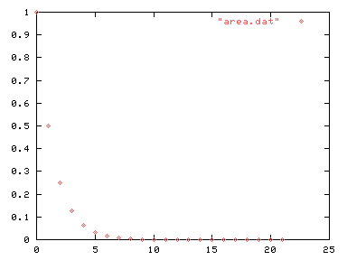
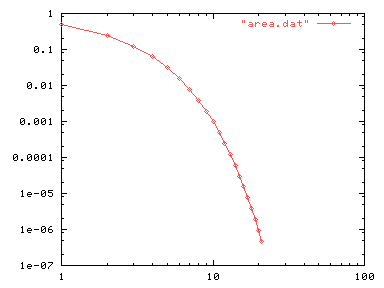
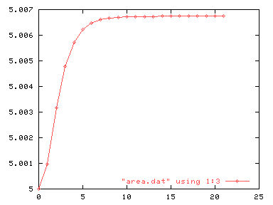

| Herramientas en GNU/Linux para estudiantes universitarios: | ||
|---|---|---|
| Anterior | Capítulo 7. Representaciones de datos | Siguiente |
Una de las principales características de gnuplot es la posibilidad de representar listados de datos numéricos. El siguiente listado son los resultados de calcular el área bajo una curva por métodos numéricos. La primera columna es el número de subintervalos utilizados, la segunda la anchura, y la tercera y cuarta columnas son el valor calculado y el error cometido frente al valor real.
# área.dat # number of subint. - width of subinterval, computed value, abs. error 0 1 5 0.00673794699908559 1 0.5 5.0009765625 0.00576138449908559 2 0.25 5.00317121193893 0.00356673506015159 3 0.125 5.00478985229103 0.00194809470805701 4 0.0625 5.00572403277733 0.0010139142217529 5 0.03125 5.00622120456923 0.000516742429855555 6 0.015625 5.00647715291715 0.000260794081935245 7 0.0078125 5.00660694721608 0.000130999783004349 8 0.00390625 5.00667229679632 6.56502027673866e-05 9 0.001953125 5.0067050843668 3.28626322820824e-05 10 0.0009765625 5.0067215063061 1.64406929883398e-05 11 0.00048828125 5.00672972430911 8.22268997247022e-06 12 0.000244140625 5.00673383506831 4.11193077187733e-06 13 0.0001220703125 5.00673589088727 2.05611181058885e-06 14 6.103515625e-05 5.00673691890656 1.02809252577885e-06 15 3.0517578125e-05 5.00673743294363 5.14055459532869e-07 16 1.52587890625e-05 5.00673768996904 2.57030048800289e-07 17 7.62939453125e-06 5.00673781848355 1.28515534214557e-07 18 3.814697265625e-06 5.00673788274127 6.42578132925564e-08 19 1.9073486328125e-06 5.00673791487013 3.21289537197345e-08 20 9.5367431640625e-07 5.00673793093482 1.60642699142954e-08 21 4.76837158203125e-07 5.00673793896686 8.03222910406021e-09 |
Las líneas que empiezan por # son comentarios y se ignoran. Es conveniente que los datos estén en un fichero, por ejemplo area.dat, aunque también se podrían introducir en el prompt de gnuplot. Se obtendría la representación gráfica con el siguiente comando:
plot "area.dat"

Esta gráfica representa puntos (X,Y) donde X se obtiene de la primera columna e Y de la segunda. Para conseguir que la gráfica sea más fácil de leer se podría teclear lo siguiente (ver "help logscale" y "help style").
set logscale
set data style linespoints
plot "area.dat"

gnuplottambién permite seleccionar las columnas que se van a representar una frente a otra. Para ello es necesario añadir la opción "using" al comando "plot". Por ejemplo, para representar la tercera columna frente a la primera escribiremos:
set nologscale
set key bottom
plot "area.dat" using 1:3

O para representar la tercera columna frente la cuarta:
plot "area.dat" using 4:3
Hay muchas opciones avanzadas para representar datos. Para mayor información se recomienda consultar la ayuda en línea "help plot datafile using".